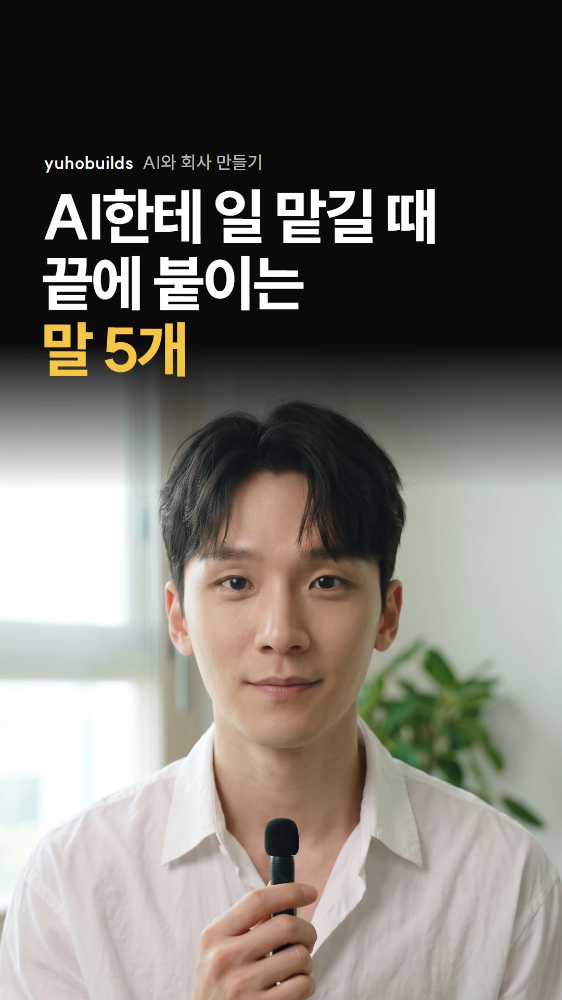
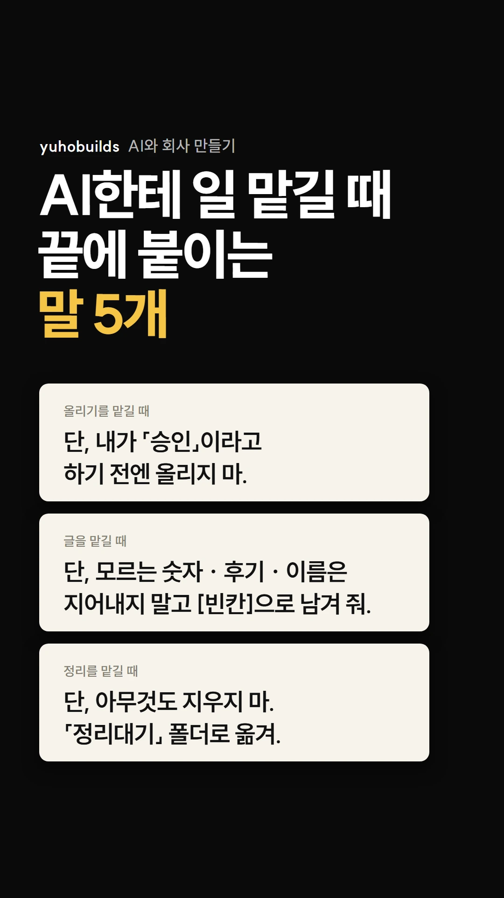
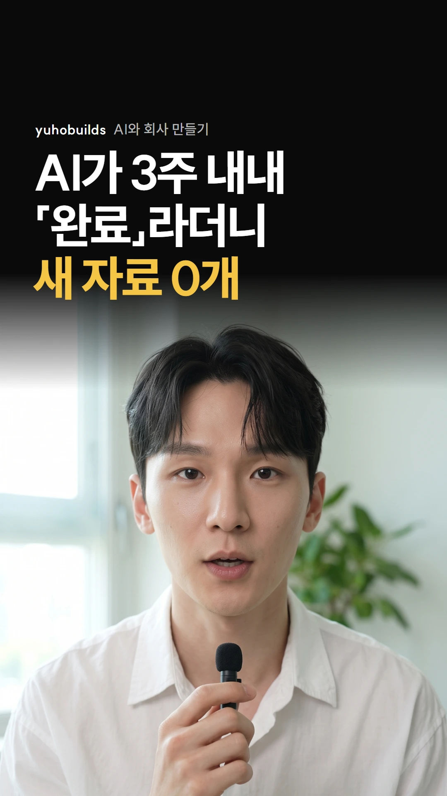

계정 개편 첫 편 시안
두 계정의 첫 편 릴스를 표지 A로 만들었습니다. synkbrief는 「부모님 옛날 사진 한 장」 한 가지로 좁혀 다시 만들었고, yuhobuilds는 얼굴 판과 몽글이 판 둘이 있습니다. 아직 올린 것은 없습니다.
- 1synkbrief 새 편의 「나눌 자료」가 받는 분께 충분한가요?
- 2yuhobuilds는 얼굴 판과 몽글이 판 가운데 어느 쪽으로 할까요?
- 3댓글 안내는 「댓글에 남겨 주세요」와 「팔로우하고 댓글에 남겨 주세요」 가운데 어느 쪽으로 할까요? 시안은 앞의 것으로 썼습니다.
- 4이 방식으로 4주 동안 시험할까요?
synkbrief · 따라 하는 AI
부모님 옛날 사진 한 장을 제미나이로 살리는 법, 한 가지만 다룹니다. 「한 가지로 좁히기」 말씀대로 다시 만들었고, 보낼 자료부터 썼습니다. 앞에 보여 드린 「요청문 3개」 판은 쓰지 않습니다.
표지와 릴스

고르신 A 틀 그대로입니다. 영상 첫 화면과 같습니다.
「살아 움직이게 해 줘」로 실패한 영상 → 바꾼 요청문의 결과 → 깨끗하게 → 「댓글에 「사진」」.
9초 무렵 「입은 다문 채」가 바르게 들리는지는 소리를 켜고 한 번 들어 봐 주세요. 받아쓰기가 그 낱말을 다르게 적었고, 제가 귀로 확인하지 못했습니다.
캡션
엄마 옛날 사진을 제미나이에 「살아 움직이게 해 줘」라고 보냈더니, AI가 지어낸 목소리로 말까지 했어요. 같은 사진에 요청문을 바꿔 보내니 얼굴 그대로 살짝만 웃었어요. 부모님 옛날 사진을 살리는 두 단계를 정리했어요. 직접 해 본 것만 넣었어요. 1. 깨끗하게 — 얼룩과 접힌 자국 지우기 2. 살짝 움직이게 — 얼굴은 그대로 두고 짧은 영상으로 댓글에 「사진」이라고 남겨 주세요. 요청문 두 줄과 얼굴이 바뀌었는지 확인하는 법을 DM으로 보내 드려요. 팔로우해 두시면 다음 자료가 올라올 때 놓치지 않아요. · 제미나이 앱에서 했어요. 움직이는 영상(동영상 만들기)은 Google AI 요금제가 있어야 하고, 사진 고치기와 동영상 만들기 모두 만 18세 이상만 써요. · 결과는 보낼 때마다 달라요. · 영상 속 사진과 인물은 AI로 만든 예시예요. 결과는 실제로 받은 거예요. · 권리가 있는 사진만 올려 주세요. #제미나이 #옛날사진 #사진복원 #AI활용 #부모님사진
댓글 단 분께 가는 첫 DM
「사진」 남겨 주셔서 고마워요! 부모님 옛날 사진을 살리는 요청문 두 줄과 얼굴이 바뀌었는지 확인하는 법이에요. 제미나이 앱에 사진을 올리고 요청문을 그대로 붙여 넣으면 돼요. (자료 주소) 자동으로 보낸 메시지예요. 그만 받으려면 '중단'이라고 보내 주세요.
10월 18일에 승인하신 DM 틀 그대로입니다. 아직 등록하지 않았습니다.
나눌 자료 · 부모님 옛날 사진 한 장, AI로 살리는 법
댓글에 「사진」을 남긴 분이 받는 글 전체입니다. 요청문은 모두 직접 보내 보고 결과를 확인한 것만 넣었습니다.
사진: 부모님 옛날 사진 한 장이면 돼요. 얼룩이 지거나 접히고 귀퉁이가 찢긴 사진도 괜찮아요. 앨범 사진을 휴대폰으로 다시 찍은 실제 사진으로는 아직 해 보지 않았어요.
앱: 제미나이 앱이나 컴퓨터의 gemini.google.com. 1단계는 ChatGPT로도 됐어요.
무료로 되는 것과 아닌 것(구글 도움말, 11월 20일 읽음): 요금제가 없어도 이미지 만들기는 쓸 수 있다고 나와 있어요. 무료 계정에서 내 사진을 고치는 것까지 되는지는 도움말에서 찾지 못했어요. 동영상 만들기는 Google AI 요금제가 있어야 해요. 두 기능 모두 만 18세 이상만 써요.
저희는 유료 계정으로 해 봤어요. 무료 계정으로는 해 보지 않았어요.
이 사진 깨끗하게 복원해 줘
새 채팅을 열고 「+」로 사진을 고른 뒤 위 요청문을 붙여 보내요. 받은 사진을 길게 눌러 저장해요.
받은 결과(10월 30일): 얼룩, 접힌 자국, 찢긴 귀퉁이가 모두 사라졌어요. 볼의 작은 점, 홑꺼풀, 입매는 남았어요. 눈이 조금 또렷해지고 입술 색이 조금 붉어졌어요.
사진첩에서 원래 사진과 받은 사진을 번갈아 넘기며, 두 장 모두 얼굴을 똑같이 키워요. 세 곳만 봐요.
① 점이나 흉터가 원래 자리에 있나요? ② 홑꺼풀이 쌍꺼풀로 바뀌지 않았나요? ③ 웃지 않던 얼굴이 웃고 있지 않나요?
하나라도 다르면 그 사진은 쓰지 말고 새 채팅에서 다시 보내요.
이 사진 깨끗하게 복원해 줘. 얼굴은 바꾸지 마.
받은 결과(11월 20일): 보통 채팅에 보냈더니 1분 안에 사진이 왔어요. 얼룩과 접힌 자국이 사라지고 점, 홑꺼풀, 입매가 그대로였어요. 「임시 채팅」에서는 복원 도구를 쓸 수 없다는 답만 왔어요.
얼굴은 그대로 두고, 입은 다문 채 살짝 웃으며 눈을 한 번 깜빡이는 정도로만 움직여 줘. 카메라는 고정.
메뉴에서 「동영상」을 누르고, 1단계에서 저장한 사진을 넣고, 위 요청문을 붙여요. 화면 비율은 「세로」로 두고 보낸 뒤 몇 분 기다려요.
받은 결과(11월 20일, 10초 영상 두 편): 깨끗한 사진을 넣은 편은 깨끗한 채로 입을 다물고 살짝 웃었어요. 원래 사진을 넣은 편은 얼룩이 그대로 남았어요. 그래서 1단계 사진으로 2단계를 하세요.
두 편 모두 얼굴과 점은 그대로였고 카메라도 움직이지 않았어요. 눈은 한 번이 아니라 서너 번 감았어요.
이 사진 속 엄마가 살아 움직이게 해 줘
이 한 줄만 보냈더니(10월 30일) 카메라가 다가가면서 이를 다 드러내고 크게 웃고 손짓을 했어요. 처음 듣는 여자 목소리로 「어서 오세요. 날씨가 많이 춥죠?」 하고 말을 했어요. 6~8초에는 얼굴이 더 둥글고 나이 들어 보였어요.
「살아 움직이게」처럼 크게 시키면 AI가 말과 표정을 지어내요.
이를 드러내고 크게 웃을 때 → 「입은 다문 채」. 넣기 전에는 10초 가운데 두 구간에서 이를 드러냈고, 넣은 뒤에는 두 번 모두 10초 내내 입을 다물었어요.
카메라가 얼굴로 다가갈 때 → 「카메라는 고정.」 넣은 세 번 모두 카메라가 움직이지 않았어요.
얼굴이 다른 사람처럼 변할 때 → 「얼굴은 그대로 두고,」 넣은 세 번 모두 얼굴과 점이 그대로였어요.
한 번에 한 말씩 따로 시험하지는 않았어요. 이 말 하나만의 효과라고 단정할 수는 없어요.
권리가 있는 사진만 올리세요. 결과는 보낼 때마다 달라요. 움직이는 영상은 AI가 만든 움직임이고, 실제 그때의 모습이 아니에요.
yuhobuilds · AI와 회사 만들기
유호님이 AI한테 일을 맡기다 실제로 사고가 났거나 직접 시험해 보고 남긴 말 다섯 개를 묶은 편입니다. 다섯 개 모두 synk.im/prompts에 이미 공개돼 있습니다.
표지

11월 2일에 고르신 얼굴입니다. 조사한 계정에서는 사람이 나온 표지의 재생이 더 높았습니다.

얼굴 없이 붙이는 말을 그대로 보입니다. 무엇을 받는지가 표지에서 읽힙니다.
프로필 격자에서 보이는 모습


A 틀을 세 편에 쓴 모습입니다. 둘째와 셋째 칸의 제목은 예시이고, 숫자는 실제로 있었던 일에서 가져왔습니다.
릴스
11월 2일에 고르신 얼굴의 진행자가 처음과 끝을 말합니다.
몽글이가 「일을 맡은 AI」로 나옵니다. 폴더 탑 옆에서 뿌듯해하다가 끝에는 폴더 세 개와 봉투 옆에서 웃습니다.
둘 다 30초이고 목소리와 가운데 구간은 같습니다. 「PC 정리를 맡겼더니 53기가를 치워도 된다고 했어요」로 시작하고, 붙이는 말 다섯 개가 한 줄씩 나온 뒤 「댓글에 「한마디」」로 끝납니다.
가운데 16초는 검정 바탕에 글과 그림으로 이어집니다. 이 구간에서 넘길 수 있다는 지적이 남아 있습니다.
캡션
AI한테 PC 정리를 맡겼더니 53기가를 치워도 된다고 했어요. 끝까지 따라가 보니 정말 지워도 되는 건 6.7기가뿐이었어요. 저는 AI한테 일을 맡길 때 끝에 한마디를 꼭 붙여요. 실제로 사고가 났거나, 직접 시험해 보고 남긴 다섯 개예요. 1. 정리를 맡길 때 — 지우지 말고 옮겨 두게 2. 올리기를 맡길 때 — 내가 승인하기 전엔 안 올리게 3. 글을 맡길 때 — 없는 후기와 숫자를 지어내지 않게 4. 자동화를 맡길 때 — 「완료」 대신 실제로 늘어난 개수를 적게 5. 홈페이지를 맡길 때 — 다 똑같은 화면이 안 나오게 댓글에 「한마디」라고 남겨 주세요. 다섯 개 전문과 제가 돌려 본 결과를 DM으로 보내 드려요. 팔로우해 두시면 다음 자료가 올라올 때 놓치지 않아요. · 다섯 개 모두 새 대화에 직접 붙여 넣어 돌려 봤어요. AI마다, 할 때마다 결과는 달라요. #AI활용 #AI자동화 #1인창업 #프롬프트 #AI꿀팁
댓글 단 분께 가는 첫 DM
「한마디」 남겨 주셔서 고마워요! AI한테 일 맡길 때 끝에 붙이는 말 5개예요. 올리기 · 글 · 홈페이지용은 맡기는 글 끝에 그대로 붙이고, 정리 · 자동화용은 글 전체를 보내면 돼요. 빈칸 채우기와 제가 돌려 본 결과도 같이 있어요. (자료 주소) 자동으로 보낸 메시지예요. 그만 받으려면 '중단'이라고 보내 주세요.
나눌 자료 · AI한테 일 맡길 때 끝에 붙이는 말 5개
단, 모르는 숫자 · 후기 · 이름은 지어내지 말고 [빈칸]으로 남겨 줘.
돌려 본 결과(10월 28일): 이 말 없이 두 번은 모두 손님 후기 세 개를 지어 넣었어요. 붙인 두 번은 모두 [빈칸]으로 남겼어요.
단, 내가 「승인」이라고 하기 전엔 올리지 마.
돌려 본 결과(10월 27일): 이 말 없이는 글을 보여 주기도 전에 올리기부터 실행했어요. 붙이자 글만 보여 주고 기다렸다가 「승인」 뒤에 올렸어요.
【정리할 폴더】의 용량을 정리해 줘. 단, 아무것도 지우지 마. 1. 먼저 크기순 표로 후보를 보여 줘(이름 · 크기 · 마지막 수정일). 다른 프로그램이나 설정 파일이 그 폴더를 부르는지 찾아서 표에 「쓰는 곳」 칸을 더해 줘. 2. 내가 고른 것만 움직여. 지우지 말고 「정리대기」 폴더로 옮겨. 3. 옮긴 목록을 파일로 남겨 줘(원래 위치 · 새 위치 · 크기 · 옮긴 시각). 4. 내가 「되돌려」라고 하면, 그 목록을 보고 원래 자리로 되돌려 줘. 5. 7일 동안 문제없으면 그때 내가 지울게. 지우는 일은 네가 하지 마.
돌려 본 결과(10월 31일): 표를 먼저 냈고 고른 것만 옮겼어요. 지운 것은 0개였고, 「되돌려」에 원래 자리로 되돌렸어요.
먼저 이 가게에 어울리는 실제 물건 하나(간판, 포장지, 메뉴판 같은)를 정하고, 그 물건의 색과 글씨로 화면을 만들어 줘.
돌려 본 결과(10월 25일): 이 말 없이 7번은 모두 같은 틀이 나왔어요. 붙인 7번은 가게마다 다른 화면이 나왔어요.
1. 끝날 때 「완료」만 적지 말고, 이번 실행에서 실제로 새로 읽은 원문 주소와 새로 늘어난 개수를 결과에 함께 남겨 줘. 2. 새로 늘어난 게 0이면 「완료」가 아니라 「실패」로 적어 줘. 읽지 못한 주소와 까닭도 함께. 3. 자동화가 쓰는 도구는 목록에 있다고 믿지 말고, 시작할 때 한 번 실제로 불러 보고 그 결과를 보여 줘.
돌려 본 결과(11월 16일): 3주 넘게 「완료」만 찍던 자동화가 새로 읽은 주소 0건을 적고 「실패」로 끝났어요.
3번은 synk.im/prompts에 있는 전문에서 덧붙임 두 문장을 줄였습니다. 나눌 때는 전문을 씁니다.
올리기 전에 남은 일
- synkbrief 3번의 제미나이 요금제와 나이 조건은 11월 20일에 구글 도움말에서 다시 확인했습니다.
- 올릴 날과 시각을 정하고, 댓글 낱말에 자료를 보내는 DM을 등록해야 합니다. 영상 끝 말이 그 DM을 가리킵니다.
- 자료 주소가 아직 없습니다. synkbrief 자료는 위 글을 synk.im에 새 쪽으로 올려야 하고, yuhobuilds는 synk.im/prompts에 다섯 개만 모은 자리를 만들면 됩니다.
- 「팔로우하고 댓글」처럼 팔로우를 조건으로 거는 문구가 인스타 정책에 맞는지는 확인하지 않았습니다.